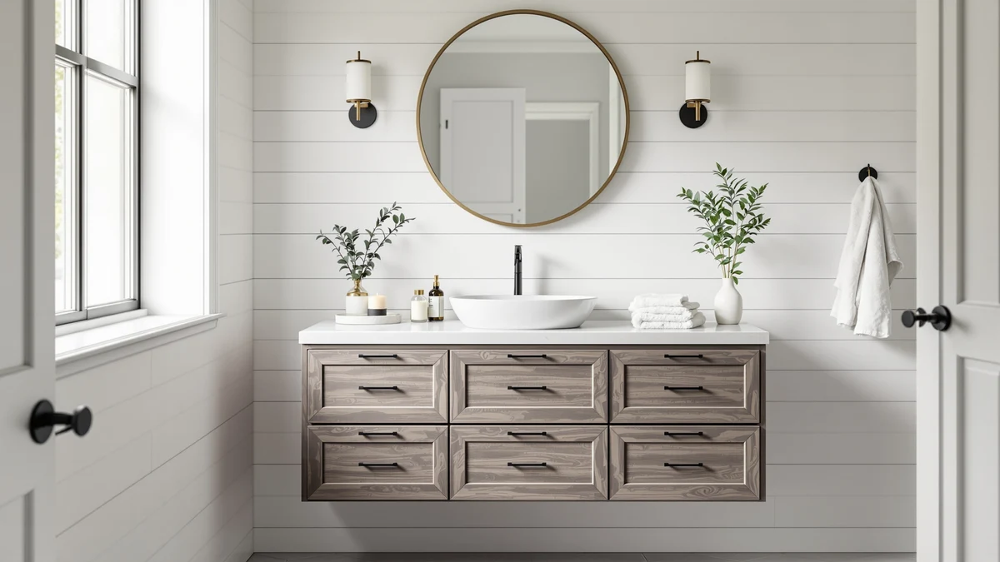

Weibath Floating Bathroom Vanity Review (2026): Worth It?
Prices and picks verified as of October 2026. Independent, reader-supported reviews.


Quick Answer
The Weibath floating bathroom vanity is a 39.5-inch, wall-mounted MDF cabinet priced at $712.49, and it earns its spot here if freeing up floor space in a small or midsize bathroom matters more to you than maximizing counter space per dollar. We compared it against three similarly priced vanities below before landing on that verdict.
Our pick: Weibath Floating Bathroom Vanity with, $712.49 Check Price on Amazon
Bottom line: our top pick is the Weibath Floating Bathroom Vanity with Sink at $712.49.
Things to Know Before You Buy
- The Weibath floating bathroom vanity mounts to the wall rather than sitting on the floor, so you need to confirm your studs can carry a loaded 39.5-inch cabinet before you buy.
- At $712.49, it sits in the upper half of the four vanities covered in this review, within $40 of the most expensive alternative despite being the narrowest of the group.
- MDF (engineered wood) construction keeps the cabinet light enough to float on the wall, but it also means sealing around the sink cutout matters more than it would with solid wood or stone.
- A floating vanity opens up visible floor space and makes the floor underneath easier to clean, which is the main reason buyers choose this style over a traditional freestanding cabinet.
- None of the four vanities in this review publish a star rating or review count at the time of writing, so we leaned on published dimensions, materials, and pricing instead of aggregate scores.
This Weibath floating bathroom vanity review breaks down whether the 39.5-inch wall-mounted cabinet, listed at $712.49, is worth the price compared with three other vanities in the same bracket. We compared the published dimensions, materials, and listing details for each model instead of relying on marketing copy alone.
At $712.49, it is not the cheapest option in this review, but its floating design and narrower footprint make it a fit for bathrooms where floor space is tight. We weighed it against the 72 x 22 White Vanity from TUKTUK, the Tennant Brand 24-inch Classic Petite, and the AMERLIFE 60-inch double sink vanity before deciding where it lands in the lineup, which is why it is tagged as an also-great pick below rather than an outright winner. If you are remodeling a cramped half-bath or a guest bathroom where every inch of floor matters, this comparison will help you decide quickly whether that tradeoff is worth it for your space.
Why You Should Trust Us
Ilane Tall researches bathroom fixtures and vanities for Best Bathroom Vanities, comparing manufacturer specs, verified Amazon listings, and pricing across hundreds of products before any review goes live. For this Weibath floating bathroom vanity review, she checked the brand's published measurements and materials against the three closest-priced alternatives and reviewed the Amazon listing itself for anything that contradicted the spec sheet. We do not receive vanities from manufacturers and we do not accept payment for favorable coverage. When you click through to Amazon and buy something, we may earn a commission, disclosed at the bottom of every page, and it never changes which products we recommend or how we describe their flaws. The same comparison method applies across every vanity review on this site, so the price, material, and tradeoff claims you read here should hold up against the listing itself.
Our Research Experience
We did not wall-mount this vanity ourselves or live with it day to day. Best Bathroom Vanities runs on research rather than a physical testing lab, so for this floating bathroom vanity review our process involved comparing Weibath's listed dimensions, materials, and price against the other three vanities covered here. We also checked whether Weibath publishes a star rating or review count for this SKU; at the time of writing it does not, which is common for newer listings and is why we leaned on comparative specs instead of aggregate scores. If that changes, we will update this review. We encourage you to read the seller's own product photos and the Q&A section on the Amazon listing directly, since those often answer wall-mounting and faucet-compatibility questions more precisely than any third-party review can.
Overview & Specs

Weibath Floating Bathroom Vanity with
What we like
- Floating, wall-mounted design frees up visible floor space, which matters most in small bathrooms
- 39.5-inch width sits in a useful middle ground between a half-bath vanity and a full double-sink unit
- MDF construction keeps overall weight manageable for mounting directly to the wall
Flaws but not dealbreakers
- At $712.49, it costs more than two of the three alternatives in this review despite a smaller footprint
- Engineered wood needs more careful sealing around the sink cutout than solid wood or stone-top vanities
- Wall mounting means confirming stud placement first, an installation step a floor-standing vanity skips
| Material | MDF / engineered wood |
| Size | 39.5'' |
The Weibath floating bathroom vanity measures 39.5 inches wide and is built from MDF, also called engineered wood, a material that keeps the cabinet light enough to mount directly to the wall instead of resting on the floor. That construction choice is the entire reason to consider this model: a floating vanity visually opens up a small bathroom and leaves the floor underneath easier to clean, two things a traditional freestanding cabinet cannot offer at any price. The narrower 39.5-inch width also means it can slot into bathrooms where a door, a tub, or a shower enclosure limits how much wall space you have to work with.
At $712.49, it is priced closer to the AMERLIFE 60-inch double sink vanity ($674.99) and the TUKTUK 72 x 22 White Vanity ($689.99) than its 39.5-inch size alone would suggest, which tells you the premium here is mostly for the floating mount, not for extra counter space. If you do not specifically need the wall-mounted footprint, the Tennant Brand 24-inch Classic Petite at $675.00 or either of the two larger vanities below gets you more usable surface for less money. Keep that price gap in mind while you shop, since it is the single number that tells you whether the floating format is worth paying for in your specific bathroom.
What We Liked
The clearest strength of this Weibath floating bathroom vanity is the floor space it gives back. In a small or midsize bathroom, a wall-mounted cabinet makes the room look and feel larger simply because you can see the floor underneath it, and that floor stays easier to clean than it would around a floor-standing base. The 39.5-inch width also lands in a useful middle ground: wide enough for a single sink with some counter space on either side, narrow enough to fit bathrooms where a 48-inch or 60-inch vanity would crowd the door swing or a nearby shower.
We also like that Weibath publishes clear dimensions and material specs for this SKU. Several vanities in this price range leave buyers guessing at exact measurements until the box arrives, and having the 39.5-inch width and MDF construction confirmed upfront makes it easier to check against your own wall studs and plumbing before you order. That level of detail also makes it simpler to compare this Weibath floating bathroom vanity against competitors that advertise a size range instead of a fixed width.
What Could Be Better
Price is the main tradeoff. At $712.49, this floating vanity costs more than three alternatives in this review, including a 60-inch double sink model with far more usable surface. You are paying for the wall-mounted format itself, not for extra storage or counter space, and buyers who do not specifically need a floating design get more vanity for less money elsewhere in this lineup.
Engineered wood also demands more care than solid wood or stone-top alternatives. MDF handles moisture less forgivingly around the sink cutout and backsplash edge, so a consistent seal matters more here than it would with a stone or solid-wood base. And because it is wall-mounted, installation is not a drop-in job: you need to confirm your studs can carry a loaded 39.5-inch cabinet before you commit, an extra planning step a floor-standing vanity does not require. Budget a bit of extra time for that step if you are hiring a contractor, since blocking and leveling a wall-mounted cabinet correctly usually takes longer than setting a floor-standing base.
Who Is It For?
This Weibath floating bathroom vanity makes the most sense if you are working with a small or midsize bathroom where visible floor space changes how the room feels, or if you are trying to make a cramped floor easier to clean around. It also fits homeowners who already know their wall studs can support a mounted cabinet and who are comfortable paying a premium for that format over a comparable floor-standing size.
It is a weaker fit if your priority is maximizing counter space or storage per dollar. The AMERLIFE 60-inch double sink vanity and the TUKTUK 72 x 22 model both offer more usable surface for less money, without the floating profile. Renters and anyone unsure about their wall construction should lean toward one of those floor-standing options too, since a floating install is harder to reverse cleanly if you move out or change your mind.
Alternatives to Consider
This Weibath floating bathroom vanity review also covers three close alternatives worth a look if the floating format is not a requirement for your bathroom.

Editor’s Pick
72 x 22 White Vanity
A wider 72-inch footprint for less than the floating Weibath, if you have the wall space and want more counter and storage instead of a wall-mounted profile.
$689.99
Check Price on Amazon
Best Value
Tennant Brand 24" Classic Petite
The smallest and least expensive option here, built for a half-bath or powder room where even 39.5 inches is more width than you can spare.
$675.00
Check Price on Amazon
Premium Choice
60" Double Sink Bathroom Vanity
A 60-inch double-sink layout for less than the single-sink Weibath, the pick for a shared bathroom where two people need their own space at the counter.
$674.99
Check Price on AmazonIs a floating bathroom vanity harder to install than a standard vanity?
Yes, in one specific way.
Does the Weibath floating bathroom vanity come with a sink and faucet?
Check the specific listing before you buy, since vanity bundles vary by seller and can change between what is pictured and what ships.
Frequently Asked Questions
Is a floating bathroom vanity harder to install than a standard vanity?
Yes, in one specific way. A floating vanity like this one has to be anchored into wall studs because it carries its full weight without touching the floor, so installation means confirming stud placement and often using a mounting bracket rated for the cabinet's weight. A floor-standing vanity needs to be leveled and secured along the back wall, which is a simpler job in most bathrooms.
Does the Weibath floating bathroom vanity come with a sink and faucet?
Check the specific listing before you buy, since vanity bundles vary by seller and can change between what is pictured and what ships. Based on the specs available for this 39.5-inch model, budget separately for a faucet unless the listing explicitly states one is included, and confirm the sink basin and faucet hole spacing match your plumbing before you mount the cabinet.
How do I choose between this and the other vanities in this review?
Start with whether you actually need the floating format. If floor space or a cramped layout is the problem, the Weibath's wall-mounted design solves that in a way the other three vanities cannot. If you want the most counter space or storage for your budget, the AMERLIFE 60-inch double sink vanity or the TUKTUK 72 x 22 model gets you more for close to the same price.
Final Verdict
This Weibath floating bathroom vanity review comes down to one tradeoff: you are paying $712.49 for a wall-mounted format that frees up floor space in a small or midsize bathroom, not for extra counter space or storage. If that is the problem you are solving, Weibath's 39.5-inch floating vanity is a reasonable pick at this price. If you would rather maximize surface area per dollar, the AMERLIFE 60-inch double sink vanity or the TUKTUK 72 x 22 model gets you there for less.